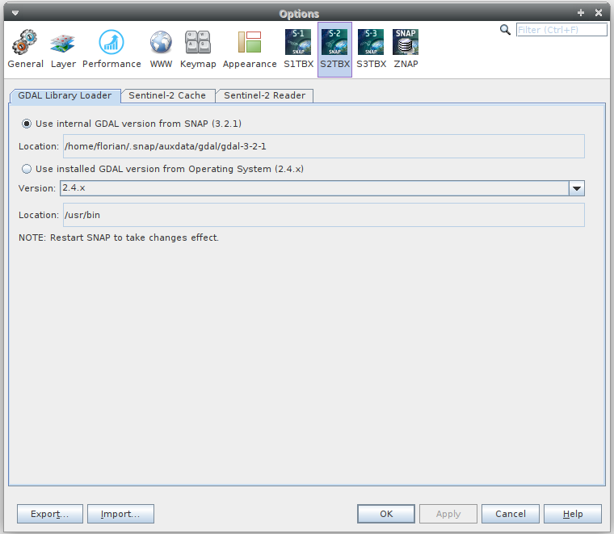
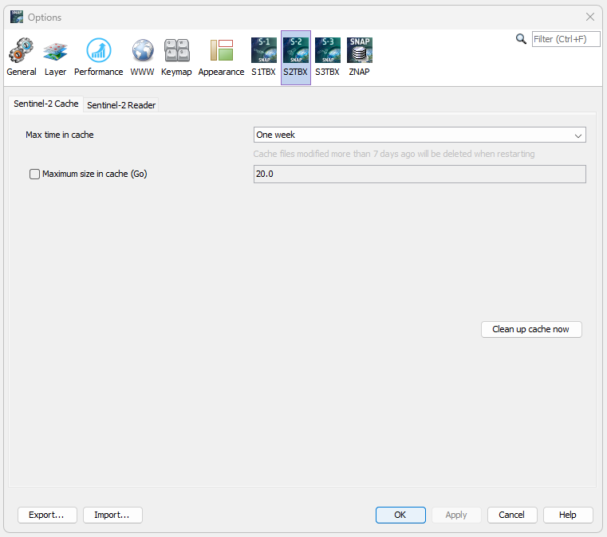

| S2TBX options | |
It is possible to configure the GDAL library loader to load one of the installed GDAL distribution from the operating system or the internal GDAL distribution within SNAP (version 3.2.1).

The internal GDAL distribution is used when no GDAL distribution is installed on the operating system or when the installed version is not compatible.
If the first option is selected and a GDAL distribution is installed on the operating system, SNAP will not load it until the second option is selected.
- Windows x86 (32 bit): from GDAL 2.1.X to GDAL 3.2.X
- Windows x64 (64 bit): from GDAL 2.1.X to GDAL 3.2.X
- Linux x64 (64 bit): from GDAL 2.0.X to GDAL 3.2.X
- MacOSX (64 bit): from GDAL 2.0.X to GDAL 3.2.X
It is possible to configure the Sentinel-2 Cache and to select if, to load or not, the different S2 masks.

The S2 images are originally in JP2 format. These images are decompresed (by tiles) to new GeoTiff images internally in SNAP.
These GeoTiff images are stored in [userFolder]/.snap/var/cache/s2tbx in order to be available in the future when working with the same images.
The user can select in the S2TBX options interface when to delete the cache and also there is a button to clean up the cache.
Moreover, the user can active the cache size checking over the time (checked every minutes).
Then the maximum cache size can be adapted. In case of exceeding cache size, the oldest product files should be deleted until the cache size has been reached 75% of the specified maximum.

The Sentinel-2 products contain different kind of masks in GML format or newly JPEG2000 format. By default, all the masks are loaded but the user can select to ignore some of them in order to be able to open the products faster.
The Sentinel-2 products contain ECMWFT auxilary data and also from the PSD 14.8 CAMSFO auxilary data. By default, all the auxilary data are loaded but the user can select to ignore some of them in order to be able to open the products faster.
From the PSD 14.8, a radiometric offset will be added up to the image reflectance at Level-1C (also at Level-2A). By default, the band are loaded without the negative offset, but the user can select to add the negative offset.